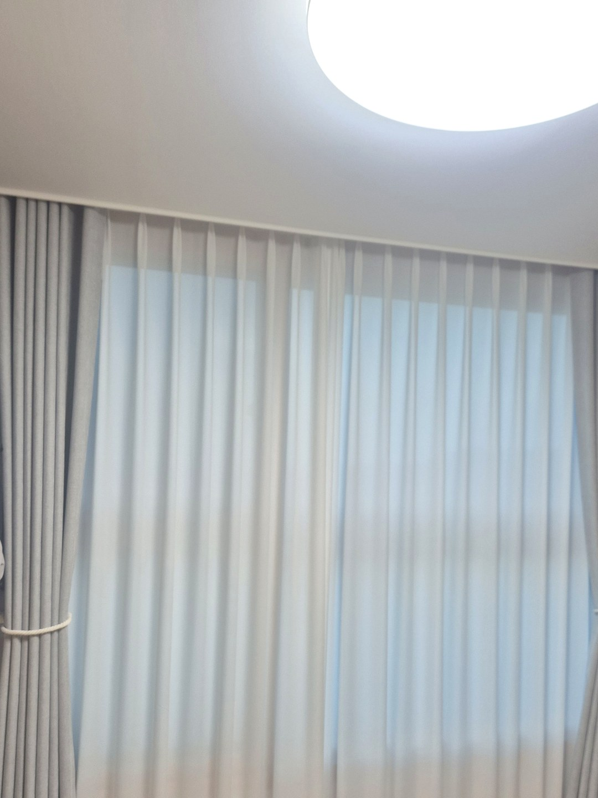
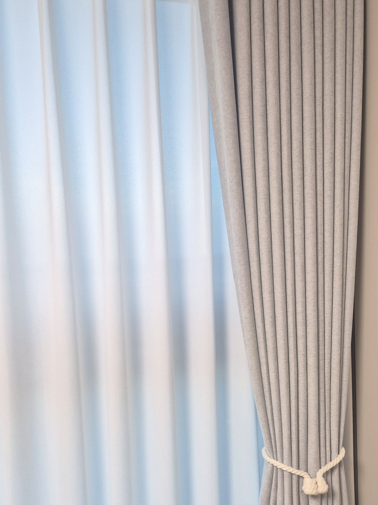
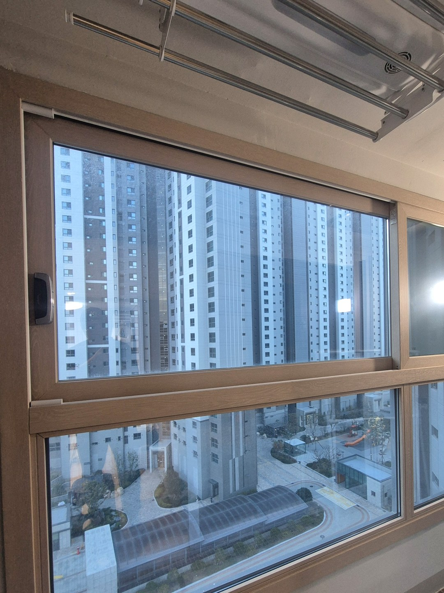
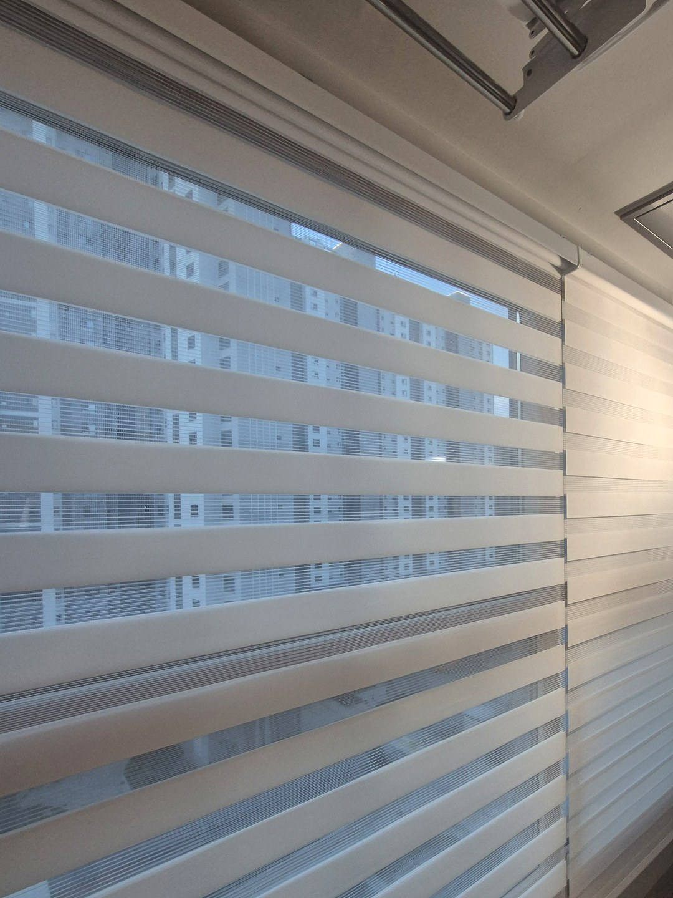

2026년 11월 3일 시공
포항 펜타시티 대방엘리움 2차
쉬폰 앞 그레이 암막커튼·
베란다 화이트 콤비블라인드 시공후기

이번 현장은 포항 펜타시티 대방엘리움 2차입니다.
며칠 전 포항 초곡 호반에서 부모님 댁 커튼을 맡겨 주신 고객님이,
본인 댁에도 커튼과 블라인드가 더 필요하다며 다시 연락을 주셨습니다.
한 번 작업을 보신 분이 다시 불러 주시는 일이라, 저희에게는 가장 반가운 연락입니다.
있던 쉬폰을 버리지 않은 이유
방에는 고객님이 쓰시던 흰 쉬폰 커튼이 걸려 있었습니다.
원단 상태가 좋아서 통째로 바꿀 이유가 없었습니다.
새로 필요한 것은 밤에 빛을 막아 줄 한 겹이었기 때문에,
쉬폰은 그대로 두고 그 앞에 암막커튼을 더하는 쪽으로 정했습니다.
낮에는 쉬폰만 닫아 부드러운 빛을 받고,
잘 때는 암막까지 닫는 두 겹 구성입니다.
색은 그레이톤으로

흰 쉬폰과 겹쳐 보일 색이라 너무 진한 색보다는 그레이톤을 골랐습니다.
흰색과 회색이 겹치니 방이 어두워 보이지 않으면서도 차분한 느낌이 납니다.
낮에 암막을 양옆으로 모아 둘 때는 타이백으로 묶어 정리할 수 있게 했습니다.
안방 베란다에는 화이트 콤비블라인드

안방 베란다 창은 천장에 빨래 건조대가 내려와 있는 자리였습니다.
이런 곳에 커튼을 달면 건조대와 원단이 서로 걸리기 쉽습니다.
그래서 위로 접혀 올라가는 콤비블라인드로 정했습니다.
색은 베란다가 밝아 보이도록 화이트로 맞췄습니다.
가림 원단과 망사 원단이 줄무늬로 번갈아 있어서,
두 줄을 겹치면 빛이 걸러지고 어긋나게 두면 바깥이 보입니다.

두 겹 커튼을 생각하신다면
솔직히 말씀드리면, 있던 커튼 앞에 한 겹을 더하는 일은 커튼박스 깊이에 따라 달라집니다.
레일 두 줄이 들어갈 깊이가 안 되면 앞쪽 커튼이 벽에 닿거나 주름이 눌릴 수 있습니다.
창 전체와 커튼박스 안쪽이 보이게 찍은 사진을 보내 주시면
쓰시던 커튼을 살릴 수 있는지부터 보고 대략적인 견적을 알려 드립니다.